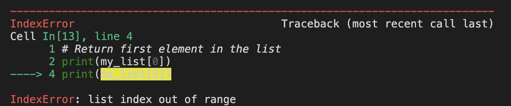

Introduce the following data types: lists, tuples, and dictionaries.
2.2 Lists
Lists are one of the core Python classes. They are, well…, ordered lists of Python objects. We declare one by listing its elements between square brackets [].
Lists are mutable, which means we can modify their contents in place (without creating a new object). We interact with them by using the lists methods. For example:
# create a listmy_list = [2,3, 6, "9"]print(my_list)print(type(my_list))print(id(my_list), '\n')# add a new item to the listmy_list.append(10)print(my_list)print(id(my_list), '\n')# remove the last item in the listmy_list.pop()print(my_list)print(id(my_list))
We can access items within the list by indexing. Remember that indexing in Python starts at 0.
# Return first element in the listprint(my_list[0])# When we try to access the "fifth" element # of the list we get an Index errorprint(my_list[5])

R and Python
Indexing in Python can get a bit of getting used to, particularly if you’re already familar with R, where we start indexing at 1. In case it is helpful, here’s some rationale about the 0-indexing:
The index in Python tells you the number of steps you’ve moved from the beginning of the list. So, when you are at the start of a list you have moved 0 places from the beginning.
2.2.2 Slicing
We can also slice a list, which means selecting a subsection of the list. The notation to do this is my_list[start:stop]. The element at the start index is included, but the one at the stop index is not included.
# define a listseq = [0,1,2,3,4,5,6,7,8]# select elements with index 3,4, and 5# NOTICE 6 (the stop index) is not included in the sliceseq[3:6]
[3, 4, 5]
When slicing, we can also omit the start or stop index. Omiting start will start the slice from the start of the list, while omiting stop will end the slice at the end of the list
# our original listprint(seq)# slice from index 0 to index 3 (4 elements)print(seq[:4])# slice from index 6 to last indexprint(seq[6:])
in is one of the so-called reserved words in Python. These are words that we can never use as names of variables because they are built-in in Python and represent a specific action or object. We can get the full list of reserved words by typing help(keywords).
help("keywords")
Here is a list of the Python keywords. Enter any keyword to get more help.
False class from or
None continue global pass
True def if raise
and del import return
as elif in try
assert else is while
async except lambda with
await finally nonlocal yield
break for not
A tuple is a fixed-length, immutable sequence of Python objects. Tuples are immutable, which means once we create one, we cannot modify their contents like we did for lists.
We create a tuple by listing its items inside parentehsis ().
tup = (1,2,4,8)print(type(tup))tup
<class 'tuple'>
(1, 2, 4, 8)
Indexing for tuples works the same as it does for lists.
# checking for membership works the same in tuples8in tup
True
Since tuples are immutable they don’t have a lot of mehtods. Actually, they only have two! Here is one of them:
# can you guess what this method is returning?print(tup)tup.index(4)
(1, 2, 4, 8)
2
2.4 Dictionaries
A dictionary stores a collectio nof key-value pairs, where both the key and the value are Python objects. Each key is associated with a value, so we can access the value by knowing the key. The syntax to create a dictonary is
For example, the following is dictionary where the keys are Goleta, Carpinteria, and Ventura, and the values are 91245019, 5623561, and 2551572 (a made-up code associated to each city).
D = { 'Goleta': 100,'Carpinteria' : 200,'Ventura' : 300}print(type(D))D
Using the in operator with a dictionary is equivalent to asking “is this element in the dictionary’s keys”? It doesn’t check the values.
# check if we have some keys in the dictionaryprint( 'Santa_Barbara'in D)print( 'Jalama'in D)# notice this is false although 100 is in D's valuesprint(100in D)